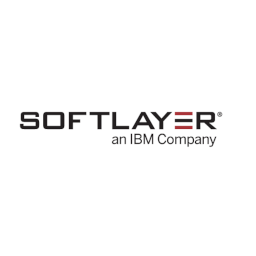
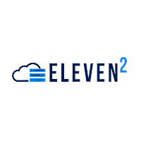

Professional Summary
Results-driven IT professional with over 10 years of progressive experience in systems engineering, DevOps, and infrastructure management. Proven track record of delivering enterprise-scale solutions that enhance operational efficiency, strengthen security posture, and reduce costs. Expert in designing and implementing hybrid cloud architectures, virtualization strategies, and automated deployment pipelines. Demonstrated success leading cross-functional teams, managing complex IT projects, and establishing best practices for enterprise infrastructure operations.
Core Competencies
Infrastructure & Systems
- Enterprise Systems Administration
- Virtualization & Cloud Architecture
- Network Design & Security
- High Availability & Disaster Recovery
- Performance Optimization & Monitoring
- Microservices Architecture
DevOps & Automation
- CI/CD Pipeline Development
- Infrastructure as Code (IaC)
- Configuration Management
- Container Orchestration
- Automated Testing & Deployment
- Site Reliability Engineering (SRE)
Leadership & Strategy
- Technical Team Leadership
- Project Management & Planning
- Vendor Relations & Negotiation
- Process Improvement & Documentation
- Strategic Technology Planning
- Client Relationship Management
Research Interests & Specializations
Infrastructure Automation & DevOps
- Infrastructure as Code (IaC) methodologies and best practices
- Automated deployment pipelines and continuous integration
- Container orchestration and microservices architecture
- Site Reliability Engineering (SRE) principles and implementation
- DevOps transformation strategies for enterprise organizations
Cloud Computing & Hybrid Infrastructure
- Multi-cloud and hybrid cloud architectures
- Cloud-native application development and deployment
- Serverless computing and function-as-a-service platforms
- Cost optimization and resource management in cloud environments
Cybersecurity & Compliance
- Zero Trust security architecture implementation
- Security automation and orchestration
- Compliance frameworks (PCI DSS, HIPAA, SOX, ISO 27001)
- Threat detection and incident response automation
- Security monitoring and observability platforms
Scientific Computing & High-Performance Computing
- GPU-accelerated computing with CUDA and CuPy
- Embedded systems and IoT with MicroPython
- High-performance computing infrastructure optimization
Modern Development & Cross-Platform Technologies
- .NET MAUI and Kotlin multiplatform for cross-platform development
- Mobile and Desktop with modern UI/UX application development frameworks
Academic & Professional Contributions
Open Source Contributions
Contributor to Ansible, Docker, and Vagrant community projects
Developer of custom monitoring plugins for Prometheus and Nagios
Author of comprehensive how-to guides covering infrastructure automation and DevOps practices
Community Leadership & Mentoring
Mentor for junior engineers transitioning to Systems Engineering roles
Technical advisor for startup companies implementing enterprise infrastructure solutions
Industry Standards & Best Practices
Contributor to industry working groups on cloud security standards
Reviewer for technical documentation on infrastructure automation
Participant in DevOps and SRE community discussions and forums
Professional Experience
Senior Systems Engineer
Independent Consulting
2020 - Present
- Lead enterprise infrastructure projects for multiple clients, delivering scalable solutions that improve operational efficiency by 25-40%
- Design and implement hybrid cloud architectures integrating on-premise infrastructure with AWS, IBM Cloud, and Google Cloud Platform
- Develop automated deployment pipelines using Jenkins, Travis CI, and Ansible, reducing deployment time by 60%
- Establish comprehensive monitoring and alerting systems using Prometheus, Grafana, and ELK stack for proactive issue resolution

Advanced Customer Support Engineer
SoftLayer (IBM Cloud)
2015 - 2016
- Provided advanced issue support to enterprise clients for SoftLayer/IBM Cloud infrastructure serving global clients across 30+ data centers worldwide
- Managed and configured complex networking infrastructure including switches, LACP/EtherChannel, VLAN trunking, and load balancers
- Troubleshot advanced issues with VMware vCenter virtualization platforms, CDN systems, Vyatta firewalls, Linux and Windows servers, various database types, and clustering technologies
- Served as an escalation point for vendor relationships with Citrix, VMware, SendGrid, Brocade, and Fortinet
Systems Security Analyst
Alert Logic
2014
- Conducted comprehensive security audits and compliance assessments for PCI DSS, HIPAA, GLBA, and SOX requirements
- Analyzed system logs and network traffic to detect and respond to security threats in real-time
- Created reports to identify network anomalies and analyze traffic patterns, and reduce network chatter
- Collaborated with security teams proactively to mitigate detected threats from security alerts and monitoring systems
Operations & Technical Assistant
Austin Exploration, Inc.
2012 - 2013
- Standardized and automated deployment practices for data acquisition hardware and software for new projects
- Established standardized deployment practices and automated provisioning for new project environments
- Supported geophysical operations including calibration and testing of specialized gravity and magnetics equipment, and data acquisition systems

CTO / Chief Technology Officer
Eleven2
2009
- Led strategic technology initiatives and infrastructure planning for web hosting company managing 200+ with around 8000 IP addresses
- Designed and implemented Nagios monitoring system performing 200,000+ health checks every 5 minutes
- Developed custom SNMP monitoring solutions using Bash and Perl for comprehensive infrastructure visibility
- Developed SQL database backup solution performing incremental backups on 100,000+ SQL database, ensuring data integrity and disaster recovery readiness
- Integrated billing platform with help desk software, streamlining customer service operations
Network Administrator
Idera / BBS Technologies
2008 - 2009
- Configured and installed Dell/Cisco/Foundry routers, switches, and load balancers for new locations and production environments
- Performed maintenance on hybrid Nortel/Hosted Asterisk VoIP and PBX phone system infrastructure
- Managed Windows & Linux servers for production, development, and QA environments including Virtual Center and ESX servers
- Monitored deployments in the datacenter, onsite and across remote locations
Technical Skills
Operating Systems & Platforms
- Linux (Debian, Red Hat, Ubuntu, CentOS, Gentoo)
- Windows Server & Desktop
- VMware ESX/vSphere/vCenter
- FreeBSD & macOS
- Container Platforms (Docker, LXC, LXD)
- Serverless Computing (AWS Lambda, Google Cloud Functions)
Networking & Security
- Cisco IOS & NX-OS
- Juniper SRX & EX
- Firewall Management (Checkpoint, Fortinet, SonicWall, Vyatta)
- Load Balancing & CDN
- VPN & Remote Access
- Network Monitoring & Analysis
Programming & Automation
- Java & Kotlin
- C# & .NET
- Python & Perl
- Bash & PowerShell Scripting
- SQL & Database Management
- API Development & Integration
Configuration Management & Deployment
- Ansible & Bash
- Docker, LXC, LXD, FreeBSD Jails
- Packer, Vagrant, Terraform
- System Deployment (Kickstart, debconf, SCCM)
- NETCONF/YANG Configuration Management
Cloud & DevOps Tools
- AWS, Google Cloud, IBM Cloud
- Jenkins, GitHub Actions & Travis CI
- Git & Version Control
- Terraform
Monitoring & Observability
- Nagios & Prometheus
- Grafana Dashboards
- ELK Stack (Elasticsearch, Logstash, Kibana)
- SNMP Monitoring
- Performance Metrics & Alerting
Advanced Technical Skills
Database & Storage
- MySQL, PostgreSQL, MongoDB
- Redis, Memcached, Elasticsearch
- Storage Area Networks (SAN)
- Network Attached Storage (NAS)
- Backup & Disaster Recovery
- Data Replication & Clustering
Security & Compliance
- Identity & Access Management (IAM)
- Multi-Factor Authentication (MFA)
- Security Information & Event Management (SIEM)
- Encryption & Key Management
- Security Auditing & Compliance
Performance & Optimization
- Load Testing & Performance Analysis
- Capacity Planning & Scaling
- Application Performance Monitoring (APM)
- Database Query Optimization
- Network Performance Tuning
- Resource Utilization Optimization
Education
Information Technology Studies (Expected completion: May 2026)
Houston Community College, North Harris College
1999 - 2003, 2015, 2024 - Present
Completed coursework in computer science, networking, and systems administration. Currently completing final courses.
Certifications & Training
Current Certifications
Transportation Worker Identification Credential (TWIC)
Transportation Security Administration (TSA)
2012 - 2017
Basic Offshore Safety Induction & Emergency Training (BOSIET)
OPITO
2013 - 2016
Apprentice Electrician License
Texas Department of Licensing and Regulation
2000-2004, 2007-2011, 2015-2019
In Progress & Planned Certifications
AWS Solutions Architect Associate
In Progress
Expected: Q2 2026
Google Cloud Professional Cloud Architect
Planning
Expected: Q4 2026
Project Management Professional (PMP)
Planning
Expected: Q4 2026
Achievements
Infrastructure Scale & Performance
- Designed and implemented monitoring system handling 200,000+ health checks every 5 minutes for infrastructure supporting 200+ servers and 8,000+ IP addresses
- Achieved 99.8% system uptime through proactive monitoring and automated issue resolution, improving from 99.2% baseline
- Reduced deployment time by 60% through implementation of automated CI/CD pipelines using Jenkins, Travis CI, and Ansible
- Improved operational efficiency by 25-40% for multiple enterprise clients through infrastructure modernization and automation
Security & Compliance
- Achieved 100% compliance across PCI DSS, HIPAA, GLBA, and SOX regulatory frameworks for enterprise infrastructure
- Reduced security incident response time by 70% through implementation of automated security monitoring and alerting systems
Cloud & DevOps Transformation
- Developed standardized DevOps implementation framework resulting in 40% improvement in operational efficiency
- Implemented Infrastructure as Code (IaC) practices using Terraform, Ansible, and Packer, reducing manual configuration errors by 80%
- Established comprehensive monitoring and observability platforms using Prometheus, Grafana, and ELK stack for proactive issue resolution